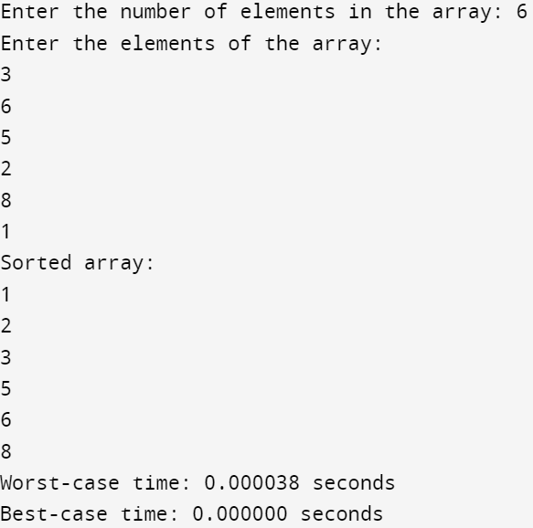

#include<stdio.h>
#include <stdlib.h>
#include <time.h>
void selectionSort(int arr[], int n) {
for (int i = 0; i < n - 1; i++) {
int min_index = i;
for (int j = i + 1; j < n; j++) {
if (arr[j] < arr[min_index]) {
min_index = j;
}
}
if (min_index != i) {
int temp = arr[i];
arr[i] = arr[min_index];
arr[min_index] = temp;
}
}
}
int main() {
int n;
printf("Enter the number of elements in the array: ");
scanf("%d", &n);
int arr[n];
printf("Enter the elements of the array:\n");
for (int i = 0; i < n; i++) {
scanf("%d", &arr[i]);
}
// Calculate the time taken for worst-case (sorted in descending order)
clock_t start = clock();
selectionSort(arr, n);
printf("Sorted array:\n");
for(int i=0;i<n;i++)
{
printf("%d\n",arr[i]);
}
clock_t end = clock();
double cpu_time_used = ((double)(end - start)) / CLOCKS_PER_SEC;
printf("Worst-case time: %f seconds\n", cpu_time_used);
// Reverse the sorted array to simulate the best-case scenario
for (int i = 0; i < n / 2; i++) {
int temp = arr[i];
arr[i] = arr[n - i - 1];
arr[n - i - 1] = temp;
}
// Calculate the time taken for best-case (already sorted)
start = clock();
selectionSort(arr, n);
end = clock();
cpu_time_used = ((double)(end - start)) / CLOCKS_PER_SEC;
printf("Best-case time: %f seconds\n", cpu_time_used);
return 0;
}
Output:
